این فهرست در آذر ۱۴۰۴ ، براساس کتابهای پیشنهادی استادان مشاور تیم ترویج زبانشناسی، تیم ترویج زبانشناسی و به ترتیب روند مطالعه مرتب شده است.
من صرفا اینجا مرتبشون کردم که راحت تر باشه دسترسی بهش و زیر هر کتابی که خودم خوندم یکم توضیحات گذاشتم به عنوان کسی که قبل شما کنکور داده و تجربم رو گفتم.
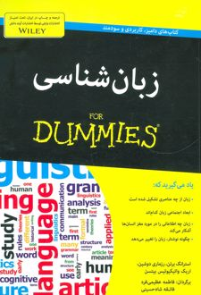
زبانشناسی فور دامیز
ترجمه: فاطمه عظیمیفرد و فائقه شاهحسینی
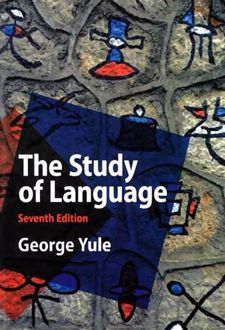
The Study of Language
Author: George Yule
توضیحات: برای آمادگی بیشتر درس زبان انگلیسی بهتره کتاب هایی که اینجا عنوان انگلیسیشون اومده به زبان اصلی بخونید، که با معادل انگلیسی اصطلاح ها آشنا بشید.
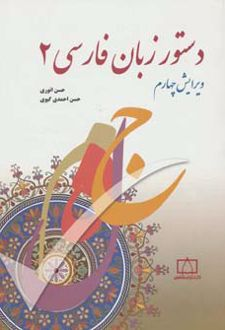
دستور زبان فارسی
نویسندگان: حسن انوری و حسن احمدی گیوی
توضیحات: این کتاب دو جلد داره، که در واقع جلد اولش یه برداشت ساده
شده و خلاصه جلد دومه، بهتره جلد دوم رو بخونید که خیلی کامل تره.
اینم بگم، انتظار نداشته باشید این کتاب رو از اول تا اخر بخونید.
هر وقت که نیاز شد سرفصلی که بلد نیستید رو بخونید.
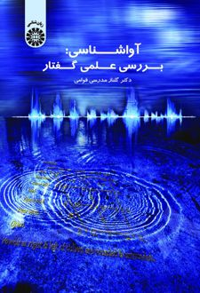
آواشناسی، بررسی علمی گفتار
نویسنده: گلناز مدرسی قوامی
توضیحات: یکی از بهترین کتاب های این لیست، من تا وقتی این کتابو
نخونده بودم آواشناسی برام خیلی نامفهوم بود.
درمورد آواشناسی
عمومیه و رو فارسی خیلی تمرکز نمی کنه. خوبیش اینه که از پایه شروع می
کنه و همه مفاهیم پایه رو ساده توضیح میده.
ازون کتاباس که انقدر خوب توضیح میده و متنش روانه که اصلا خسته نمیشد
موقع خوندش. حتما بخونیدش عالیه!
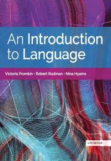
An Introduction to Language
Authors: Fromkin, Rodman & Hyams
توضیحات: اینم جزو کتاب هایی که بهتره به انگلیسی بخونیدش. نه فقط برای
اینکه بیشتر با سوالای زبان کنکور اماده شید، بیشتر بخاطر اینکه کلی
طنز و مطالب بامزه داره که لذت میبرید از خوندش به زبان اصلی.
فک کنم طولانی ترین کتاب این لیست باشه که بیشتر مفاهیم پایه زبانشناسی
رو توش گنجوندن.
سعی کنید تمرین های اخر هر فصل رو هم حل کنید که خیلی کمک می کنه به
درک بیشتر اون فصل.
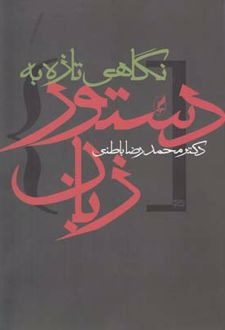
نگاهی تازه به دستور زبان
نویسنده: محمدرضا باطنی
توضیحات: اگه کتاب های قبلی رو خونده باشید، مطالب این کتاب بیشتر تکراریه. ولی بازم خوندش مفیده چون دستور ساختاری و دستوری گشتاری رو خیلی خوب و ساده توضیح میده که ازون مباحثن که هرچی هم درموردشون بخونید بازم یه چیزایی مونده که یاد بگیرید.
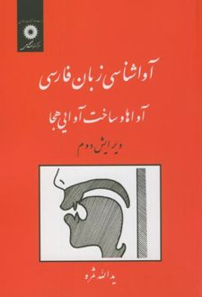
آواشناسی زبان فارسی
نویسنده: یدالله ثمره
توضیحات: این کتاب برخلاف کتاب خانوم قوامی تمرکزش روی آواشناسی فارسیه و بیشتر کتاب صرف توصیف دقیق واجگونه های تک تک واج های فارسی شده. این بخش کتاب بیشتر تخصصیه. یه بخش کوتاه هم اول کتاب مفاهیم کلی اواشناسی رو توضیح میده.
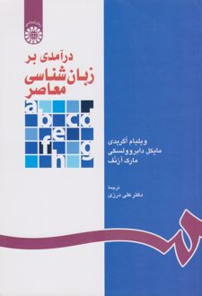
درآمدی بر زبانشناسی معاصر
نویسندگان: اگرادی، دابروولسکی و آرونف
مترجم: علی درزی
توضیحات: بیشتر مطالب این کتاب هم پوشی داره با کتاب فرامکین، مهمتیرین
فرقشون اینه که این کتاب تو مطالب و تمرین هاش از کلی مثال زبان های
مختلف داره که با ویزگی های خاصشون آشناتون می کنه.
متن ترجمه آقای درزی خیلی خوبه ولی اینکه برا اصطلاح هایی که استفاده
کردن معادل انگلیسشون رو نیاوره و حتی اخر کتاب هم فقط لغت نامه
انگلیسی به فارسی داره و لغت نامه فارسی به انگلیسی نداره یکم خوندن
کتاب رو ناخوشایند کرده.!
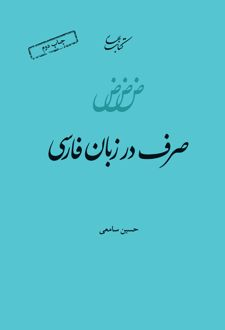
صرف در زبان فارسی
نویسنده: حسین سامعی
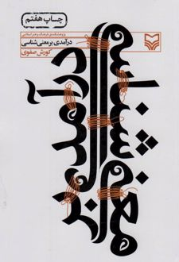
درآمدی بر معنی شناسی
نویسنده: کوروش صفوی
توضیحات: این کتاب فوق العادس حتما بخونیدش کلی لذت می برید از قلم آقای صفوی و کلی هم سوال میاد از معنی شناسی که تو کتابا فبلی خیلی بهشون پرداخته نشده.
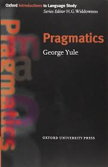
Pragmatics
Author: George Yule
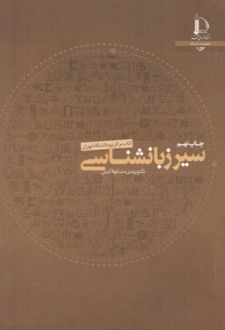
سیر زبانشناسی
نویسنده: مهدی مشکاتالدینی
توضیحات: به نظر من این کتاب خیلی گنگ و الکی پیجیدس. کتاب تاریخ مختصر زبانشناسی ترجمه علی محمد حق شناسی بهتره، البته که طولانی تر هم هست و مطالبش از سطح کنکور ارشد فراتر میره.
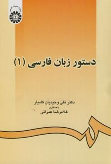
دستور زبان فارسی
نویسنده: تقی وحیدیان کامیار
توضیحات: این کتاب خیلی خیلی خوبه، خیلی صریح و مختصر ۹۰٪ مطالبی که برای درستور نیازتون میشه رو تو خودش گنجونده.
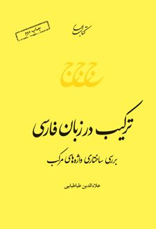
ترکیب در زبان فارسی
نویسنده: علاءالدین طباطبائی
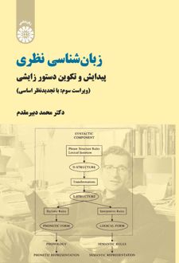
(فقط چهار فصل اول) زبانشناسی نظری
نویسنده: محمد دبیرمقدم
توضیحات: اگه بعد خوندن همه کتابای قبلی بازم نمی دونید دستور گشتاری
چیه و چامسکی دقیقا چی گفته، این کتاب دقیقا به همینا می پردازه.
البته که بعد خوندش هم هنوزم نمی دونید دستور گشتاری دقیقا چیه ولی
خیلی بیشتر از قبل می فهمید.
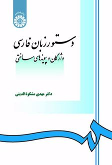
دستور زبان فارسی، واژگان و پیوندهای ساختی
نویسنده: مهدی مشکاتالدینی
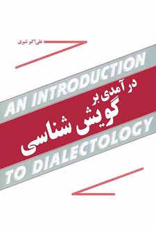
درآمدی بر گویش شناسی
نویسنده: علیاکبر شیری
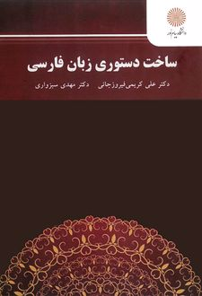
ساخت دستوری زبان فارسی
نویسنده: علی کریمی فیروزجایی و مهدی سبزواری
توصیه میشود روی یک گرایش تمرکز کنید. اگر هدف شما زبانشناسی محض و گرایشهای همضریب آن است، منابع بالا کفایت میکند، اما برای ۳ گرایش کاربردی زیر، باید به منابع و مباحث دیگر نیز مسلط شوید: